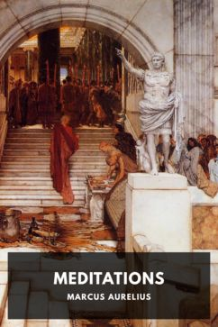

Translated by George Long
Public domain edition
Author: Marcus Aurelius (Roman Emperor, 121–180 AD)
Translator: George Long (1862)
Length: ~45,600 words, 12 short books
Copyright status: Public domain — written in the 2nd century AD, and this English translation is from 1862. Free to read, copy, and share.
What it's about
Meditations isn't really a "book" in the way we usually mean one — it's the private diary of a Roman Emperor, written to himself during military campaigns, never meant for anyone else to read. Marcus Aurelius ruled Rome from 161–180 AD and spent much of his reign fighting wars on the frontier. In the quiet moments between battles, he wrote down reminders to himself: how to stay calm, how to deal with difficult people, how to keep his own character intact under constant pressure.
It's considered one of the foundational texts of Stoic philosophy — not "stoic" as in emotionless, but Stoicism as in the actual philosophical school: focus only on what's in your control, accept what isn't, and treat your own character as the one thing worth protecting.
Why it's worth reading as a student
- It's short and non-linear — you can open to any page, read a few entries, and get something out of it. No need to read start to finish in one sitting.
- It's about handling pressure — dealing with difficult people, disappointment, and things outside your control are exactly the pressures that come up around exams, deadlines, and campus life.
- It's blunt, not preachy — Marcus isn't lecturing an audience; he's talking to himself, so the advice feels more like an honest note than a sermon.
A few lines that stood out
You have power over your mind — not outside events. Realize this, and you will find strength.
Waste no more time arguing about what a good man should be. Be one.
The impediment to action advances action. What stands in the way becomes the way.
Read the full text
The complete book, in the same public-domain translation, is free to download directly here as a PDF: